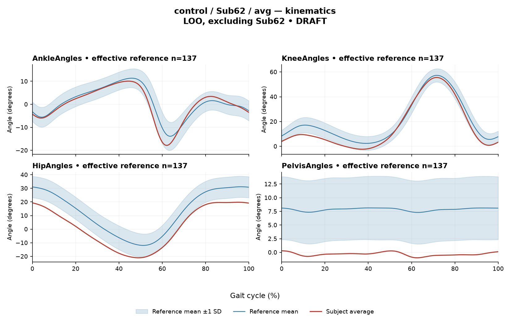

rater1 / Report 45 of 105 / Review spreadsheet row 46
RA5354EEC7114E5CC
Case: control_Sub62_avg
Read this report independently. Record judgments in the workbook. Browser pages do not save ratings.
Report: exact saved text
# Gait Report Interpretation — Sub62 **Interpretation version:** limited-evidence-v3.1-candidate **Scope:** Research interpretation of supplied quantitative summary only. Not a diagnosis, and not a basis for treatment selection. --- ## 1. Objective Findings **Participant and side.** Sub62 is a member of the **control (healthy) group** of this dataset. No affected/paretic side is designated, and none applies. Membership in the control group is a dataset grouping; it does not by itself establish normal physiology, and nothing in this summary confirms or excludes any condition. **Supplied data.** Sagittal-plane joint kinematics (ankle, knee, hip, pelvis) with per-joint Gait Variable Scores (GVS) and a composite GPS-like score; ensemble-averaged EMG envelopes for seven muscles (GAS, RF, VL, BF, ST, TA, ERS) with algorithm-detected above-threshold intervals, coverage, peak normalized amplitude, and max |z| location versus a healthy reference; and two co-contraction indices (CCI). **Not supplied in this task.** - **Gait speed and cadence: not provided.** Because speed is absent, the comparability of this subject to the reference cohort's self-selected speed range (0.80–1.79 m/s) cannot be checked in either direction. - **Step-length symmetry index: not applicable.** The paretic/non-paretic index used in this task is undefined for a control participant. This does not mean a general left/right step-length measure could not be defined elsewhere; it was simply not computed here. - **Individual toe-off, matched muscle-specific timing norms, intermediate gait-event boundaries, stride-level variability, raw-signal quality checks, and expert plots are not available to this interpretation.** Their absence here does not mean they are absent from the source release. Age, sex and event data may exist in the release but are not in this input. Time post-stroke, clinical stroke scores and non-paretic-side designations apply only to the stroke cohort and are not applicable to this participant. **Cycle convention.** All percentages refer to the analysis cycle defined from initial contact of the stride-defining limb (0%) to its next initial contact (100%), with left- and right-side strides pooled in the healthy release — an initial-contact-aligned pooled cycle rather than one named limb's observed event trace. Only the 0%/100% boundary may be named; **no intermediate event or phase boundary is supplied**, so no percentage in this report is assigned to stance, swing, loading response, mid-stance or pre-swing, and no conventional 60% split is applied. **Reference used for deviation scoring.** 137 healthy subjects, leave-one-out (Sub62 excluded), 1001 phase points, source main_cohort_excel. This reference pools body sides and ages and is not matched to this subject on age or speed. Comparisons below are descriptive differences from that empirical reference; they can neither establish normal physiology nor a disease effect, and this caution applies to controls as much as to patients. --- ## 2. EMG Envelope and Threshold Findings **How these numbers must be read.** Each curve is an **ensemble-averaged envelope**, normalized to a shared maximum across available strides before averaging (no per-stride rescaling, no further amplitude normalization). "Above-threshold" means the averaged envelope exceeded **20% of that same curve's own peak**, with a minimum retained interval of 3% of the cycle. Consequently: - Interval boundaries are **envelope-threshold crossings on a mean curve**, not physiological onset, offset, or contraction duration. - Below-threshold regions are **not** evidence of muscle inactivity. - Coverage and intervals describe the mean envelope only; they do **not** establish that the same pattern occurred in every stride, and an average curve cannot show stride-to-stride variability. - Amplitudes are **relative envelope values**, not force, strength, or neural drive, and muscles cannot be ranked stronger or weaker from them. - Muscle actions may be named anatomically, but no interval is mapped to a functional task such as push-off, clearance, or weight acceptance, and no timing is labelled early, delayed, prolonged or normal — the required matched timing references are not supplied. **Detected intervals and coverage (mean-envelope level):** | Muscle | Retained interval(s) | Coverage | Peak norm. amplitude | Boundary continuity | |---|---|---|---|---| | GAS | 18%–50% | 31% | 0.51 | Not continuous across 0%/100% | | RF | 62%–68%; 81%–43% | 70% | 0.49 | Above threshold across the cycle boundary | | VL | 81%–48% | 68% | 0.61 | Above threshold across the cycle boundary | | BF | 60%–66%; 68%–56% | 95% | 0.65 | Above threshold across the cycle boundary | | ST | 22%–28%; 34%–48%; 55%–65%; 70%–19% | 81% | 0.58 | Above threshold across the cycle boundary | | TA | 11%–18%; 56%–84%; 87%–9% | 58% | 0.35 | Above threshold across the cycle boundary | | ERS | 0%–100% | 100% | 0.56 | Above threshold across the cycle boundary | Notes on structure: - **GAS** is the only channel whose retained interval does **not** span the 0%/100% boundary; it is a single mid-cycle region. - **ERS** shows one retained interval spanning the full analysis window with reported coverage of 100%. At the mean-envelope level under this threshold rule, this is the one channel for which the supplied evidence indicates no retained below-threshold segment. This reflects an envelope that stays above 20% of *its own* peak; it does not imply continuous contraction, tonic overactivity, or any amplitude judgement. - **BF, RF, ST and TA** each show one or more short gaps between retained intervals (e.g., BF at 56%–60% and 66%–68%). Sub-threshold segments shorter than 3% of the cycle would not be retained by the duration rule, so the listed intervals should not be read as an exhaustive map of where the envelope was or was not above threshold. Small differences between summed interval lengths and reported coverage are at the rounding level and are not interpreted further. - A reported onset of 0% (ERS) and the TA interval ending at 9% / starting at 87% are described relative to the **initial-contact boundary of contributing strides**; 0% is also the analysis-window edge. No further event meaning is assigned. **Max |z| versus the healthy reference.** This statistic is the **largest absolute standardized difference across all 1001 phase points** — an extreme-value statistic, not a single-observation z-score. Its location marks where this curve differs most from the phase-specific reference mean, which is **not necessarily the time of peak envelope amplitude** and is not a gait event. "Above/below reference" means above/below the reference **mean at that phase point**, not above or below a healthy percentile limit. - ERS 2.9 above reference at 77%; VL 2.7 above at 44%; BF 2.2 above at 41%; ST 1.9 above at 43%. - TA 3.1 below reference at 0% (the initial-contact/window boundary); GAS 1.4 below at 4%; RF 1.3 below at 3%. The conventional 2-SD rule does **not** apply here: in this dataset every one of 109 healthy controls exceeds |z| = 2 on at least one muscle, and the per-muscle healthy 95th percentiles for this statistic run from 3.65 (ERS) to 4.61 (TA), higher still under leave-one-out. **All seven values here, maximum 3.1, fall below the lowest of those per-muscle 95th percentiles.** No value is labelled abnormal, and no statistical significance is claimed. **Co-contraction indices.** CCI is the Falconer–Winter index computed over the **full continuous normalized envelopes** across the whole cycle (2 × common area / summed areas). It is a whole-cycle overlap index of envelopes, **not** simultaneous activation time, muscular force, stiffness, or a phase-specific result, and it can be non-zero even when detected burst intervals do not overlap, because sub-threshold activity contributes. Values depend on the normalization and envelope pipeline and cannot be compared with thresholds from other studies or algorithms. - **TA vs GAS = 0.29**, inside the healthy-cohort interval 0.24–0.59 and below the supplied median of 0.39, positioned in the lower part of that interval. - **RF vs BF = 0.77**, inside the healthy-cohort interval 0.48–0.83 and above the supplied median of 0.68, closer to the upper endpoint. Falling inside these empirical intervals does not establish physiologically normal co-activation or normal muscle function; falling outside them would not establish pathological co-activation or impaired control. These reference intervals come from a pooled cohort not matched to this subject. **Pipeline caveat.** For healthy controls, the normalization and left/right stride-pooling account derives from release documentation; healthy MAT aggregation and side-specific denominators were not numerically verified by the stroke audit. The channel-level numbers above should be read with that provenance limitation in mind. --- ## 3. Kinematic and Reference Comparisons All kinematic values are **sagittal plane only**; coronal and transverse data are not included, so no statement about frontal- or transverse-plane motion is possible. | Channel (sagittal) | ROM | GVS | |---|---|---| | Ankle | 27.9° | 2.20 | | Knee | 57.9° | 4.80 | | Hip | 40.8° | 11.04 | | Pelvis | 1.3° | 8.19 | **Composite (GPS-like) = 7.36.** This is the RMS of the per-joint GVS values over the supplied sagittal channels — it is *not* the validated 9-variable GPS. Relative to the supplied cohort composite reference (median 5.1, 95th percentile 10.7), 7.36 is **above the median and below the 95th percentile**. Those composite percentiles are pooled calibration figures and should **not** be treated as matched leave-one-out normal limits for this subject; the per-subject deviation scoring itself used the 137-subject leave-one-out reference. **Interpretation limits.** - GVS and the composite are **summary magnitudes of difference** from the reference waveform. They do not localize the direction of any waveform difference (e.g., more flexed vs more extended), do not identify the phase at which differences occur, and do not indicate a mechanism. - The largest per-joint deviation is at the **hip (11.04)**, followed by **pelvis (8.19)**; ankle (2.20) and knee (4.80) are the smaller contributors. This ranking describes distance from the reference mean waveform only. - **Sagittal pelvic ROM is 1.3°**, a small excursion in this plane. ROM alone does not establish a clinical restriction in the absence of an appropriate matched comparison, and no ROM reference values were supplied here. Small sagittal pelvic excursion is also a channel where modelling and marker-placement factors are known to matter; whether any such factor is present here is not determinable from this input (see Section 4). - The reference is pooled across sides and ages and is not matched to this subject; **gait speed was not provided**, so speed comparability cannot be assessed at all. Deviations from this reference therefore cannot be attributed to any specific cause, and — as for any participant, control or patient — they do not establish a disease effect, impairment, or clinical diagnosis. Equally, scores near or below the cohort median would not prove normal physiology. - Near-boundary or rounded values are reported as displayed; no hidden unrounded value is classified. --- ## 4. Questions for Further Clinical Assessment These are open questions for the clinician-investigator. None presupposes that the issue has been observed, and none should be read as a finding or as a recommendation for treatment. 1. **Speed and cadence:** Can the self-selected walking speed and cadence for this trial be retrieved from the release? Without them, comparability of this subject to the reference cohort's speed range cannot be evaluated, and speed-related effects on both EMG envelope shape and kinematic deviation cannot be separated from other sources. 2. **Pelvis channel provenance:** Is there a way to verify marker placement, pelvis model definition, and any static-calibration offset for this session? The question is whether a modelling or measurement factor could contribute to the combination of 1.3° sagittal pelvic ROM and a GVS of 8.19 — this has not been observed here, only left undetermined. 3. **Hip deviation localization:** Can the hip waveform be inspected against the leave-one-out reference band to determine at which phases and in which direction the difference occurs? The GVS magnitude alone does not provide this. 4. **EMG signal quality:** Are raw traces, electrode placement notes, and artefact/crosstalk screening available for the ERS, VL and TA channels? Whether baseline offset, crosstalk or low signal-to-noise influenced the ERS full-window above-threshold result or the TA boundary-located max |z| cannot be assessed from mean envelopes alone. 5. **Stride-level data:** Can individual stride envelopes and stride counts be retrieved, so that consistency of the detected interval structure across strides — and stride-to-stride variability, which an averaged curve cannot show — could be examined? 6. **Event data:** Are toe-off and other gait events available in the release for this participant? If so, the detected interval boundaries could be re-expressed relative to observed events rather than cycle percentages alone. 7. **Matched reference feasibility:** Is a subset of the healthy cohort matched on age and walking speed to this participant available for a re-run of the deviation and CCI comparisons? The present pooled comparison limits how far any difference can be interpreted. 8. **Contextual documentation:** Are participant-level notes (footwear, assistive device, trial repetitions, any symptoms reported on the day) recorded in the release for this control session, to contextualize a composite score above the cohort median? --- *Summary caution:* Every comparison in this report is a descriptive difference from an unmatched empirical reference, computed on averaged envelopes and sagittal kinematics. These data do not establish normal or abnormal physiology, do not identify gait phases, do not measure strength or force, and do not support any diagnostic conclusion or treatment decision.
Requirements for this report
Fill the corresponding Coverage rows in the workbook. G03 is included once. These are the approved requirements, not prefilled judgments.
| Excel row | ID | Required content | Components / optional content |
|---|---|---|---|
| 235 | R152 | Identify hip AND pelvis as the principal sagittal GVS differences AND distinguish pelvic GVS difference from the small measured pelvic excursion (ROM 1.3 degrees). Exact GVS values are optional; identify the findings as reference-relative sagittal summary differences. | AND: hip AND pelvis AND contrast between pelvic GVS and small excursion (ROM 1.3). No offset direction or restriction. Exact values optional. |
| 236 | R153 | Describe EITHER (A) TA envelope below its phase-specific reference mean at approximately 0% of the cycle OR (B) VL envelope above its phase-specific reference mean at approximately 44% of the cycle OR (C) all seven supplied muscles have displayed max |z| values below 3.65. One complete route suffices. Exact single-muscle max-|z| magnitudes are optional. | A/B: selected muscle AND its stated direction AND approximate location. C: all seven supplied muscles AND displayed max-|z| comparison below the supplied 3.65 endpoint. No individual muscle, signed envelope direction or location is required for C. The 3.65 comparison is a displayed-value statement about a supplied pooled endpoint, not a matched LOO normal limit or a clinical classification. Threshold extent remains an averaged-envelope property. |
| 237 | A004 | Identify the participant as a healthy control AND state that the leave-one-out comparison excludes this participant. IF speed is discussed, state it was not supplied; IF cadence is discussed, state it was not supplied; IF the task-specific paretic/non-paretic step-length index is discussed, state it is not applicable. Each branch is triggered only by that domain. Exact reference count 137 is optional. | AND: healthy-control provenance AND self-exclusion from the leave-one-out reference. Conditional, per domain: speed not supplied; cadence not supplied; task-specific paretic/non-paretic index not applicable. Optional: count 137. G03 applies separately once. A correct core with one missing AND component is partial. |
| 238 | G03 | Express a meaningful limitation of reference comparability AND why the comparison cannot establish disease effects or clinical diagnosis; for controls it cannot establish disease or overall normality. One statement may also support a case requirement. | AND: comparability and inference limitations |
Exact model input: system instruction
Draft a research gait-report interpretation for a physical therapist or physiatrist using only the supplied quantitative summary. This is a limited-evidence interpretation task, not diagnosis or treatment selection. Rules: - Describe the participant's actual group and side, available findings, and missing channels accurately. Healthy-group membership does not prove normal physiology; deviations from an empirical reference do not by themselves establish disease. - Treat detected EMG intervals and coverage as properties of an averaged envelope under the stated threshold and duration rule. Do not convert them into physiological onset, offset, duration, continuous contraction, or inactivity outside the intervals. You may describe reported coverage, retained intervals and boundary continuity at the mean-envelope level. Do not infer the same pattern in every individual stride. Say no below-threshold segment only when the supplied evidence establishes that; a rounded coverage value or no retained interval alone does not establish it. - Individual toe-off and matched muscle-specific timing references are not supplied in this task. Use percentages of the analysis cycle. When the input explicitly identifies an initial-contact boundary, you may name that boundary or describe numerical proximity to it. Do not assign stance/swing, loading response, pre-swing, mid-stance or another event to a percentage, or substitute a conventional 60% split. Anatomical muscle actions may be named, but do not map an interval to a gait-phase function such as clearance, push-off or weight acceptance. Do not characterize timing as normal, early, delayed or prolonged without the required evidence. - Respect the supplied normalization method. Relative envelope amplitude is not strength or force, and average curves do not establish stride-to-stride variability. - Report CCI as a whole-cycle overlap index of normalized EMG envelopes. You may compare it with the supplied empirical interval or a supplied median, including proximity to an endpoint. Do not invent an unavailable median. Being within that interval does not establish physiologically normal co-activation or normal muscle function; being outside it does not establish pathological co-activation, stiffness, impaired control or a diagnosis. CCI is not simultaneous activation time, muscular force or a phase-specific result. It depends on normalization and envelope methods; do not transfer values or thresholds from other studies or algorithms. - Describe GVS and GPS-like as summary differences from the stated reference. Neither localizes waveform direction or phase; ROM alone does not establish a clinical restriction without an appropriate comparison. Do not treat pooled calibration percentiles as matched leave-one-out normal limits. - Where using a reference comparison, convey both limited comparability and the inability to establish a disease effect or clinical diagnosis from that comparison. One clear explanation per report is enough; age and speed need not be recited as separate checklist words. A speed inside an overall range does not prove that an appropriate matched reference exists. Apply these limits to controls as well. - The location of maximum |z| is the largest standardized difference from the reference, not necessarily the time of peak envelope amplitude or a gait event. Above/below reference in an EMG row means relative to the phase-specific reference mean at that location, not relative to a healthy percentile limit. - Preserve numerical direction and the displayed precision. Do not invent values, clinical severity grades, statistical significance, or unavailable reference values. Descriptive comparisons with supplied values remain allowed. Near-boundary rounded values do not justify classifying hidden unrounded values. - Clinical follow-up questions may ask whether a mechanism or measurement issue exists; do not presuppose it has already been observed. Do not recommend treatment. If EMG is unavailable, section 2 may simply state that envelope timing, amplitude and CCI cannot be assessed. Reference-only plots do not provide patient EMG. Use exactly these four sections: 1. Objective Findings 2. EMG Envelope and Threshold Findings 3. Kinematic and Reference Comparisons 4. Questions for Further Clinical Assessment
Exact model input: case summary
Candidate interpretation version: limited-evidence-v3.1-candidate
Draft the four-section report using only this subject's supplied evidence.
Metric definitions (read before interpreting any number below):
- All joint angles and ROM values are SAGITTAL PLANE only. Coronal/transverse data are not included.
- The released EMG curves are ensemble-averaged envelopes. For each participant and recorded muscle, normalization uses a shared maximum across the available strides before averaging; individual strides are not independently rescaled to their own peaks. This pipeline uses the released mean curves without further amplitude normalization. For healthy controls, the normalization and left/right stride pooling account comes from the release documentation. Healthy MAT aggregation and side-specific denominators were not numerically verified by the stroke audit. Amplitudes are relative envelope values, not absolute neural activation, force, or strength. Do not rank muscles as stronger or weaker from these amplitudes, or infer stride-to-stride variability from an average curve.
- Above-threshold intervals are the regions where the averaged envelope exceeds 20% of that curve's own peak, minimum retained interval 3% of the cycle (by sample count). An interval written as (X%-Y%) with X > Y wraps across the 100%->0% cycle boundary (envelope remains above threshold across the cycle-defining event). An onset of 0% is the analysis-window boundary, not necessarily a physiological onset. "No interval detected" means no region met the threshold + duration criteria; it does NOT mean the muscle is inactive or non-functional.
- CCI is the Falconer-Winter co-contraction index computed on the full continuous envelopes (2*common area / summed areas), so it can be non-zero even when the DETECTED burst intervals of the pair do not overlap (sub-threshold activity contributes).
- The composite kinematic deviation score is the RMS of the per-joint Gait Variable Scores over the sagittal channels provided ("GPS-like", not the validated 9-variable GPS).
- The paretic/non-paretic step-length index used in this task is not applicable to controls. This does not imply that a general left/right step-length symmetry measure cannot be defined.
- "Max |z| deviation" is the LARGEST absolute z-score across all 1001 phase points of the cycle, comparing this curve to the healthy-cohort mean/SD at each phase. This is an extreme-value statistic, NOT a single-observation z-score: in this dataset every one of 109 healthy controls exceeds |z| = 2 on at least one muscle, and per-muscle healthy 95th percentiles for this statistic run 3.65 (ERS) to 4.61 (TA) -- higher still under leave-one-out. Do not label a value abnormal by the conventional 2-SD rule; use the healthy reference range given per muscle where provided.
- Healthy-cohort CCI reference (this dataset): RF-vs-BF median 0.68 (2.5th-97.5th pct 0.48-0.83); TA-vs-GAS median 0.39 (0.24-0.59). Composite score reference: median 5.1, 95th percentile 10.7.
- COHORT BACKGROUND (calibration context, not necessarily the exact reference used for this subject -- the actual reference composition is stated in a dedicated line with the subject data below): the full healthy cohort is 138 subjects for kinematics, effective n = 106-109 per muscle for EMG (29 controls have no usable EMG; completeness varies by age), pooling both body sides and all ages; it is not age- or speed-matched to this subject. A leave-one-out run uses one subject fewer than these counts.
- SPEED SUPPORT LIMIT (applies to most stroke subjects in this dataset): the healthy reference cohort's self-selected walking speeds span 0.80-1.79 m/s. If this subject's gait speed is below 0.80 m/s, NO speed-matched healthy reference exists in this dataset -- 41 of the 50 stroke subjects are below that floor. Deviations from the reference then conflate slow-walking effects with stroke-specific control changes, and the two cannot be separated from these data. Describe deviations from the reference as such; do not attribute them wholly to stroke pathology.
- Additional source fields are outside this input. Age, sex and gait events may be available in the release; time post-stroke, stroke clinical scores and a non-paretic-side designation apply only to the stroke cohort, as applicable. Do not claim every listed field exists for every participant. Distinguish not supplied, not applicable and documented absent recordings.
The release dictionary defines contributing strides from initial contact of the stride-defining limb (0%) to its next initial contact (100%). The healthy Excel release averages left- and right-side strides, so this is an initial-contact-aligned pooled cycle, not one named limb's observed event trace. This event anchor is documentary; healthy MAT pooling was not numerically reverified. The boundary may be called initial contact of contributing strides. No intermediate event or phase boundary is supplied.
Model-visible information boundary: the summary contains mean-curve metrics and algorithm-detected intervals, not individual toe-off, matched normal muscle timing, stride-level variability, raw-signal quality checks, or expert plots. Information not supplied here must not be described as absent from the source dataset. Gait-cycle percentages alone do not identify gait phases.
Subject: Sub62 (group: control, affected side: N/A)
Gait speed: not provided
Cadence: not provided
Step length symmetry index: not applicable (this task's paretic/non-paretic index; control has no paretic side)
Composite kinematic deviation score (GPS-like): 7.36
Deviation reference actually used for this subject: 137 healthy subjects (leave-one-out, excluding Sub62), 1001 phase points, source: main_cohort_excel.
EMG envelope findings:
- GAS: above-threshold interval(s) 18%-50%, 31% of cycle above threshold, peak normalized amplitude 0.51, max |z| vs healthy reference: 1.4 (below reference, at 4% of cycle)
- RF: above-threshold interval(s) 62%-68%; 81%-43% (wraps cycle boundary), 70% of cycle above threshold, above threshold across cycle boundary, peak normalized amplitude 0.49, max |z| vs healthy reference: 1.3 (below reference, at 3% of cycle)
- VL: above-threshold interval(s) 81%-48% (wraps cycle boundary), 68% of cycle above threshold, above threshold across cycle boundary, peak normalized amplitude 0.61, max |z| vs healthy reference: 2.7 (above reference, at 44% of cycle)
- BF: above-threshold interval(s) 60%-66%; 68%-56% (wraps cycle boundary), 95% of cycle above threshold, above threshold across cycle boundary, peak normalized amplitude 0.65, max |z| vs healthy reference: 2.2 (above reference, at 41% of cycle)
- ST: above-threshold interval(s) 22%-28%; 34%-48%; 55%-65%; 70%-19% (wraps cycle boundary), 81% of cycle above threshold, above threshold across cycle boundary, peak normalized amplitude 0.58, max |z| vs healthy reference: 1.9 (above reference, at 43% of cycle)
- TA: above-threshold interval(s) 11%-18%; 56%-84%; 87%-9% (wraps cycle boundary), 58% of cycle above threshold, above threshold across cycle boundary, peak normalized amplitude 0.35, max |z| vs healthy reference: 3.1 (below reference, at 0% of cycle)
- ERS: above-threshold interval(s) 0%-100%, 100% of cycle above threshold, above threshold across cycle boundary, peak normalized amplitude 0.56, max |z| vs healthy reference: 2.9 (above reference, at 77% of cycle)
Co-contraction indices:
- TA_vs_GAS: CCI = 0.29
- RF_vs_BF: CCI = 0.77
Joint kinematic findings (sagittal plane):
- AnkleAngles: range of motion 27.9 deg, Gait Variable Score 2.20
- KneeAngles: range of motion 57.9 deg, Gait Variable Score 4.80
- HipAngles: range of motion 40.8 deg, Gait Variable Score 11.04
- PelvisAngles: range of motion 1.3 deg, Gait Variable Score 8.19Reference context for expert review
# Reference context: control/Sub62 Mean/SD reference: 137 controls; method leave_one_out; exclusions: ['Sub62']. Effective reference counts: GAS=108, RF=107, VL=108, BF=105, ST=107, TA=106, ERS=105, AnkleAngles=137, KneeAngles=137, HipAngles=137, PelvisAngles=137. The exact system and user input files define what the model receives. The EMG and kinematic plots are supplementary expert evidence, not model inputs. The plotted mean plus/minus one SD is descriptive, not a clinical normal band. Negative lower EMG bands can result from mean minus SD; they do not imply negative recorded EMG. The max-|z| p95 span in the input is pooled calibration context. Complete muscle-specific LOO thresholds are not supplied; an appropriately indeterminate classification is allowed. Controls are excluded from their own mean/SD reference, but cohort-level calibration has prior reference-data reuse. It is not an independent matched clinical limit. GPS-like is a four-channel sagittal composite, not the validated nine-variable GPS. The pooled median/p95 background is not a matched LOO normality boundary. CCI uses continuous normalized envelopes over the whole analysis cycle. An empirical interval comparison does not establish normal muscle function. Threshold intervals and rounded coverage describe the averaged envelope. Rounded 100% coverage and one interval do not prove absence of short below-threshold gaps. Use the group-specific cycle and normalization provenance in the actual input. No individual intermediate gait events or matched normal muscle timing are supplied. Administrative age and published bilateral speed are not added to this input. Expert-visible plots do not justify requiring unseen direction, phase or morphology. For a new-case requirement, cite exact input evidence. Select clinically useful descriptive content without inferring a diagnosis or severity from rank alone.
EMG and kinematic curves
The curves are supplementary expert evidence. Only the saved text inputs were supplied to the model; do not require curve-only observations.
EMG

Kinematics
